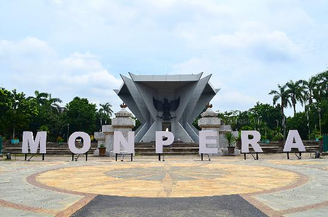
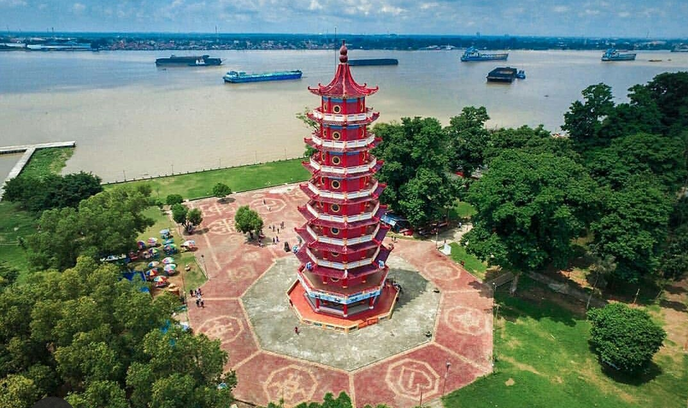
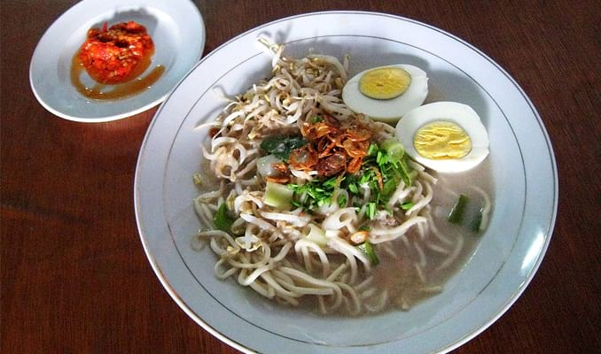
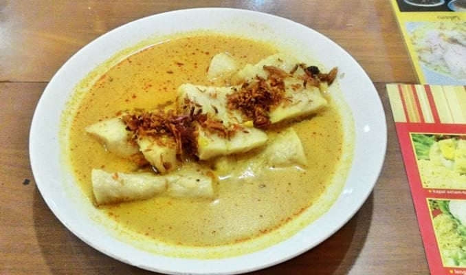
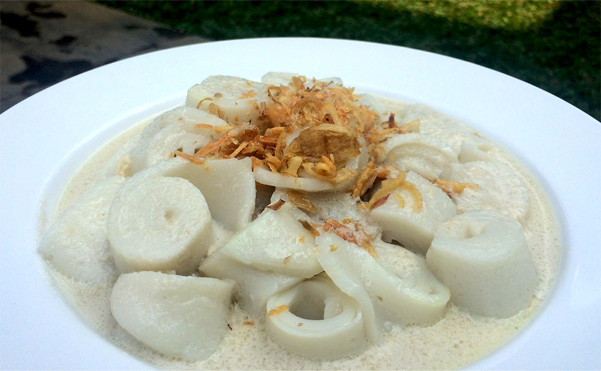
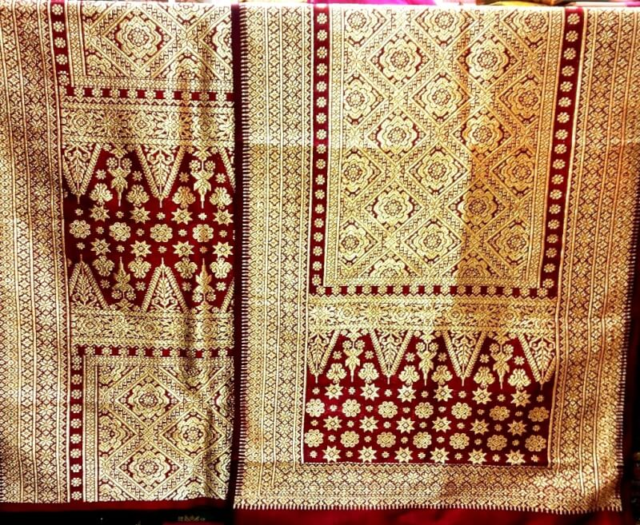
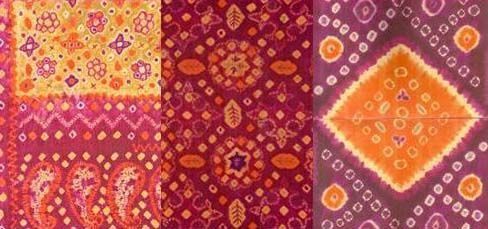

Ngiteri
Palembang
Ngiteri dalam bahasa palembang artinya mengelilingi. Jadi, ngiteri Palembang adalah mengelilingi palembang. Yuk, mari..
WISATA
Kota Palembang adalah ibu kota provinsi Sumatra Selatan. Palembang adalah kota terbesar kedua di Sumatra setelah Medan. Kota dengan luas wilayah 400,61 km2 ini dihuni oleh lebih dari 1,6 juta penduduk pada 2018.
Sejarah Palembang yang pernah menjadi ibu kota kerajaan bahari Buddha terbesar di Asia Tenggara pada saat itu, Kerajaan Sriwijaya, yang mendominasi Nusantara dan Semenanjung Malaya pada abad ke-9 juga membuat kota ini dikenal dengan julukan "Bumi Sriwijaya". Berdasarkan prasasti Kedukan Bukit yang ditemukan di Bukit Siguntang sebelah barat Kota Palembang yang menyatakan pembentukan sebuah wanua yang ditafsirkan sebagai kota pada tanggal 16 Juni 688 Masehi menjadikan kota Palembang sebagai kota tertua di Indonesia.
Monpera
Museum Monumen Perjuangan Rakyat atau bisa juga disebut dengan Monpera. Monpera terletak persis di Depan Masjid Agung Palembang. Museum Monpera dibuat untuk memperingati serangan dari Agresi Militer Belanda II yang pada saat itu Belanda mengepung kota Palembang dengan mengerahkan Tank dan Artileri. Belanda juga menembaki pejuang nasionalis dan menjatuhkan bom di kota Palembang, Pertempuran itu terjadi di kota Palembang selama 5 hari 5 malam.
Didalam Monpera kita bisa melihat berbagai macam koleksi sejarah yang berkaitan dengan peristiwa perjuangan masyarakat Palembang menghadapi Agresi Militer Belanda II seperti Foto dokumentasi, Pakaian, Senjata, buku dan mata uang yang dipakai pada saat itu Dibagian luar anda juga akan melihat disisi kiri dan disini kanan bangunan. terdapat beberapa ralief yang menggambarkan bagaimana pertempuran 5 hari malam, Tank Baja sebagai simbol pertempuran.
Monpera dibangun pada tanggal 17 Agutus 1975, selesai pembangunan pada tahun 1988 dan diresmikan oleh Menko Kesra RI H Alamsyah Ratu perwiranegara masa Gubernur H Sainan Sagiman.
Pulau Kemaro
Pulau Kemaro merupakan salah satu objek wisata andalan Palembang yang ramai dikunjungi masyarakat di akhir pekan atau ada di acara keagamaan. Pulau Kemaro sendiri berada di kawasan Sungai Musi, waktu tempuh sekitar 20 menit menggunakan kendaraan air dari Dermaga Point kawasan Benteng Kuto Besak.
Selain Pagoda yang dibangun pada 2006 itu, daya tarik lain Pulau Kemaro adalah Klenteng Hok Tjing Rio atau lebih dikenal Klenteng Kuan Im yang dibangun pada 1962. Di depan Klenteng inilah terdapat makam saudagar Tiongkok Tan Bun An dan Siti Fatimah melegenda. Kisah cinta mereka berdua inilah yang konon membuat Pulau Kemaro terbentuk.
Sejarah Pulau Kemaro sudah ada sejak Kerajaan Sriwijaya yang erat kaitannya dengan kisah putri dari raja Kerajaan Sriwijaya dan putra raja Kerajaan Tiongkok, dari legenda itulah muncul sebuah Pulau yang dikenal dengan sebutan Pulau Kemaro. Yang mana arti dari pulau kemaro adalah pulau yang kemarau (pulau yang tidak pernah tenggelam ketika sungai Musi sedang pasang).
MAKANAN
Sebagai salah satu kota besar di Indonesia dan menjadi ibukota provinsi Sumatera yang terletak di bagian selatan, sudah bisa dipastikan Palembang punya daya tarik tersendiri. Selain dengan adanya wisata alam berupa Sungai Musi dan Jembatan Ampera, masih banyak lagi tempat wisata lain, salah satunya adalah wisata kuliner yang cukup banyak jumlahnya.
Ada banyak sekali makanan-makanan tradisional yang masih dipertahankan oleh masyarakat. Meskipun Palembang lebih terkenal dengan pempek-nya, namun kamu perlu tahu Palembang mempunyai banyak kuliner lainnya.
Mie Celor
Mie celor berarti mie celup, karena mie celor dalam satu porsinya akan diisi dengan mie dan kuah santan kaldu ebi. Selain itu, untuk bisa memperoleh satu porsi lengkap mie celor akan ada tambahn berupa tauge, telur, kucai, dan daging udang. Namun untuk membuat mie celor, yang dipakai adalah jenis mie telur, dan uniknya mie tersebut memiliki rasa serta kelezatan berbeda di setiap produsennya.
Laksan
Selain pempek yang telah fenomenal, laksan makanan khas Palembang juga tak kalah lezatnya dengan pempek karena memiliki rasa yang lebih memukau. Dibuat dengan tepung sagu dan ikan, rasanya memang mirip sekali dengan pempek, namun yang membuatnya berbeda dan lebih unik adalah pada penggunaan kuahnya. Laksan akan disajikan bersama dengan kuah bersantan layaknya lontong sayur dengan warna kemerah-merahan, rasanya sendiri begitu gurih dan nikmat saat ditenggak.
Burgo
Sekilas makanan ini mirip dengan kwetiaw karena bentuknya yang tipis. Bagi masyarakat awam, sepintas Burgo akan terlihat seperti lontong sayur dengan rendaman kuah santan. Tapi saat anda mengamati lebih dekat dan mulai menikmatinya, maka ada perbedaan yang mencolok dari kuliner ini. Potongan putih yang terlihat seperti lontong, ternyata adalah potongan dari olahan berbahan dasar tepung beras dan tepung sagu yang dibentuk mirip dadar gulung. Bentukan dadar gulung ini yang kemudian diiris-iris untuk kemudian dinikmati dengan kuah santan.
Budaya
Sejak dibukanya Jalan Tol Cipularang, kota Bandung telah menjadi tujuan utama dalam menikmati liburan akhir pekan terutama dari masyarakat yang berasal dari Jakarta sekitarnya. Selain menjadi kota wisata belanja, kota Bandung juga dikenal dengan sejumlah besar bangunan lama berarsitektur peninggalan Belanda.
Kain Songket
Songket digolongkan dalam keluarga tenunan brokat. Songket ditenun dengan tangan dengan benang emas dan perak dan pada umumnya dikenakan pada acara-acara resmi. Benang logam metalik yang tertenun berlatar kain menimbulkan efek kemilau cemerlang.
Songket Palembang tidak hanya sekadar kain pelindung tubuh yang estetis namun memiliki makna adiluhung yaitu kemakmuran, kejayaan, dan keberanian.
Kain Jumputan
Kain Jumputan atau Kain Pelangi adalah kerajinan kain yang dihasilkan dengan teknik jumputan, mengikat dan merendam (tie and dye) untuk menghasilkan motif tertentu.
Prosesnya dimulai membuat pola, lalu mengikat erat bagian bagian-bagian tertentu yang dikehendaki kemudian mencelupkannya ke larutan pewarna sesuai keinginan. Supaya aman, beberapa pengrajin yang saya kenal menggunakan bahan pewarna alami seperti gambir, bunga kecubung, kayu damar, nila, dll.